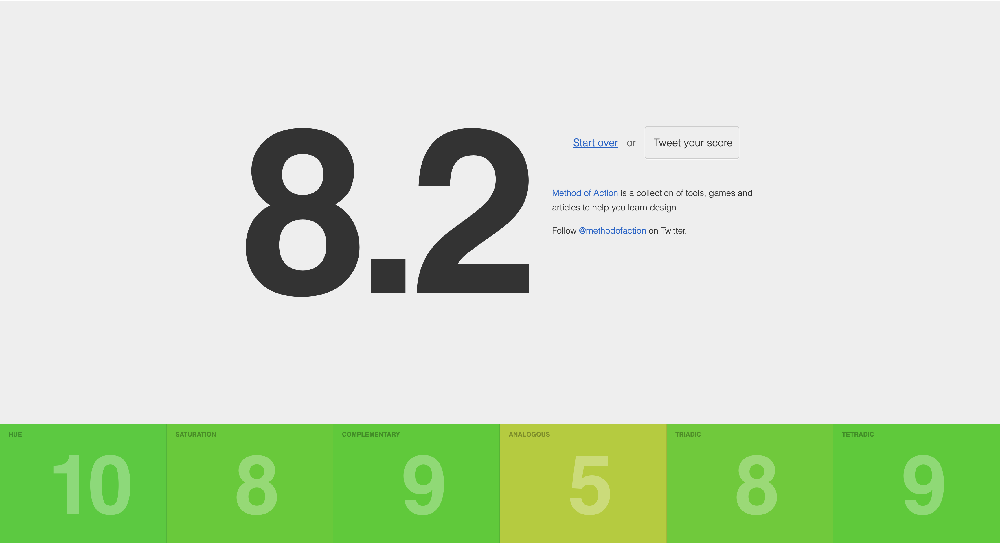
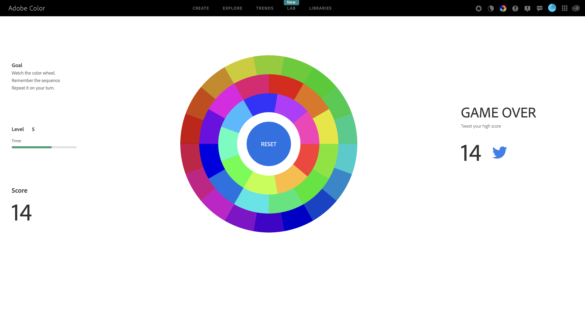

Semantic Colours
In the article by Fabien Gavinet, Fabien discusses how they reinvented how their company "Getaround" readapted and redesigned their design system to evolve into a semantic colour system rather than a traditional form factor. The key aspect of this is the internal design system (in their case, often Figma) has styles and colours that are named based on their function and state (i.e. what this should be and what it should be doing), rather than just stating the physical colour.The advantages of this easily justify the time it took to set up this process. For starters, it took care of one of their most significant issues: a need for uniform design. Because it's now apparent what each colour is used for, when a new designer comes in, it's pronounced what colours and styles they should be using to create a more uniform look across all aspects of design. Additionally, labelling their styles this way easily allows for scalability if the brand decides to do another rebranding.
Key Takeaways
- - Colours (and styles) associated with their function & state rather than actual colour.
- - Makes it more easily understandable for different designers
- - Creates a more uniformed look
- - Easily scalable if they want another rebranding
Brain Light Sensor
MIT has recently discovered a new way to examine the brain, using a method similar to MRI. The main difference is that it relies more on magnets to produce a result that allows the scan to map under objects that couldn't be scanned through before.Emotional Piloerection
To put it quite simply (and as Jonathan McPhetres) says, piloerection is the "contraction of small muscles at the base of hair follicles resulting in the visible erection of hair", also more colloquially known as 'goosebumps'. While the article goes into some detail about some studies collecting data as to different stimuli that cause piloerection, it essentially falls into just a few categories;- - Often occurs when feeling "strong emotions, such as awe, excitement or fear."
- - It can occur with positive (including mating) and negative emotions (including responding to threats).
Something else that could be pretty interesting to explore is that people can also have voluntary control over their piloerections.
Gaming
The two games I got to play with colour were quite interesting for a different way of experiencing colour (to note, "What In Colour" wasn't working for me as the CSS wouldn't load on the site). The first one I tried was the Color Game (results below). This was interesting as I often tried to find the closest association. Particularly when multiple colours started appearing, I was confused about where to look (which resulted in a temporary reduction of the score when that was introduced). However, something that pointed out to me was that when it's unclear due to the clash of unorganised colours, it can be disorientating and confusing as a viewer, which I'll need to consider when designing my works later.
The other game was the Adobe Colour Game. In this game, though, I wasn't associating the changes on screen with any colour; instead, I just memorised the location of the missing shapes. Because of this, there wasn't much to take from this other than the fact that the user disregards it if the colour has no association with the material.
